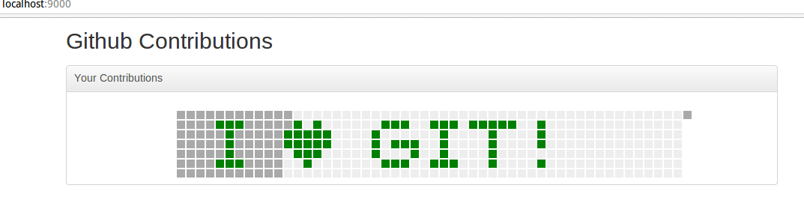
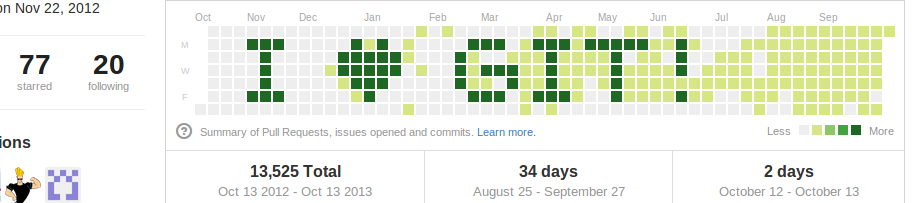

My portfolio
© Ionică Bizău - 2013
configs
Configs
My configuration files
Installer
wget -qO- https://raw.github.com/IonicaBizau/configs/master/installer.sh | sh
VIM files
.vimrc- VIM colors
- plugins: Zencoding
Johnny's apps
Small scripts that make the work faster. Put them in root:
sudo cp -r john<tab> /Exmample:
Instead of:
git tag -d dev
git tag dev
git push --tagswe can use:
/j<tab>m<tab>...where <tab> means TAB key press.
NodeJS JSON Validator:
node /j<tab>j<tab> test.json
Applications
Qt
wget -qO- https://raw.github.com/IonicaBizau/configs/master/utils/qt.sh | shdrag-popup
drag-popup
Drag a browser popup by dragging a div from it.
gh-contributions
GitHub Contributions
A simple application that generates a repository that being added into your GitHub account creates a nice contributions graph.
Installation
wget -qO- https://raw.github.com/IonicaBizau/gh-contributions/master/installer.sh | sh
If your system does not have wget, you can also use curl:
curl https://raw.github.com/IonicaBizau/gh-contributions/master/installer.sh -o install.sh; chmod +x install.sh;./install.sh; rm -rf install.sh
Example
Desing your GitHub contributions calendar using the desinger from browser:

A repo will be generated after pusing it to GitHub your profile will look like this:

github-portfolio
github-portfolio
A generator that generates a portfolio with your Github projects.
Guess-Your-Number
Guess Your Number
Divide et Impera method for quessing a number you choose in an interval. The minimum number of questions for the correct answer.
The steps
- Choose the limits of your number: limMin and limMax.
- Choose your number.
- Give the correct answers, and the application will guess your number.
Javascript
View the live preview of Javascript version (which has few bugs because it's only a preview: after downloading this, they are fixed.):
The basic functionality is this:
var i, j, mij;
// Yes, it's greather than mij
i = mij + 1;
j = j;
think();
// No, it isn't greather than mij
i = i;
j = mij;
think();
// think function
function think() {
if(i == j + 1 || i == j) {
console.log("The number is: " + i);
return;
}
mij = Math.floor((i + j) / 2);
// Ask again: is it greather than mij?
}
Copyright
Copyright (C) 2012 Ionica Bizau.
Permission is granted to copy, distribute and/or modify this document
under the terms of the GNU Free Documentation License, Version 1.3
or any later version published by the Free Software Foundation;
with no Invariant Sections, no Front-Cover Texts, and no Back-Cover Texts.
A copy of the license is included in the section entitled "GNU
Free Documentation License".
internet-connection
Internet Connection
A small script that plays a beep when there is no Internet connection
Installation
- Download this repository using
git cloneor clicking on this link.:
git clone git@github.com:IonicaBizau/internet-connection.git
- Install
mplayer:
$ sudo apt-get install mplayer
How to use
Enter in the downloaded repository folder and run start.sh:
$ ./start.sh &
Or add ./start.sh to start at boot:
$ crontab -e
Then add @reboot followed by path to start.sh script.
Utility
The script will play a sound when the Internet connectivity is stopped.
johnnys-node-static
johnnys-node-static
Simplified version of node-static module.
Documentation
| Function | Description | Example |
|---|---|---|
setStaticServer |
Sets the static server. | |
setRoutes |
Sets the routes object. | |
exists |
Verifies if the route does exist and returns true or false. |
|
serve |
Serves the file specified in routes object. | |
serveAll |
Serves any file from root. |
Example
File structure:
root/
├── index.js
└── public/
└── html/
├── index.html
├── test1.html
└── test2.html
For the file structure above, the following routes would serve files for each url:
{
"/": { "url": "/html/index.html" },
"/test1/": { "url": "/html/test1.html" },
"/test2/": { "url": "/html/test2.html" }
}
This is the content for index.js file.
// require Johnny's static
var JohhnysStatic = require("../index.js"),
http = require('http');
// set static server: public folder
JohhnysStatic.setStaticServer({root: "./public"});
// set routes
JohhnysStatic.setRoutes({
"/": { "url": "/html/index.html" },
"/test1/": { "url": "/html/test1.html" },
"/test2/": { "url": "/html/test2.html" }
});
// create http server
http.createServer(function(req, res) {
// safe serve
if (JohhnysStatic.exists(req, res)) {
// serve file
JohhnysStatic.serve(req, res, function (err) {
// not found error
if (err.code === "ENOENT") {
res.end("404 - Not found.");
return;
}
// other error
res.end(JSON.stringify(err));
});
return;
}
// if the route doesn't exist, it's a 404!
res.end("404 - Not found");
}).listen(8000);
Test
npm install johnnys-node-static
npm test # or ./test.sh
Changelog
v0.1.1
- Added
serveAllmethod.
v0.1.0
- Initial release.
Licence
See LICENCE file.
johnnys-webview
johnnys-webview
A simple web pages loader as a desktop application.
Node-text-to-speech
Node Text to Speech
Text to speech Node project
Romanian
ro function from Speech will convert a text to audio message:
- first parameter: the text that you want to convert
- callback (err, mp3Link)
mp3Link is the url of mp3 that represents the audio message.
Example:
var Speech = require("./speech");
Speech.ro(message, function (err, mp3Link) {
console.log(err, mp3Link);
});
test-youtube-api
NodeJS Youtube API Test
Test application that tests Youtube API NodeJS module.
Before you start
You need a Google Account to access the Google APIs Console, request an API key, and register your application.
Register your application with Google so that it can submit API requests.
After registering your application, select the YouTube Data API as one of the services that your application uses:
- Go to the APIs Console and select the project that you just registered.
- Click on the Services pane.
- In the list of APIs, find the YouTube Data API and change its status to ON.
Familiarize yourself with the core concepts of the JSON (JavaScript Object Notation) data format. JSON is a common, language-independent data format that provides a simple text representation of arbitrary data structures. For more information, see json.org.
Installation
Download this repository using:
git clone http://github.com/IonicaBizau/test-youtube-apior via
npm:npm install test-youtube-apiIf you downloaded the repository using
git cloneenter in the downloaded directory and runnpm install:cd test-youtube-api npm installGo to your Google apps and select your application.
Select
API Accessoption, like in the screen shot:
Then create an OAuth 2.0 client ID.

Complete the required fields:
- Product name: what ever you want (e.g. "Youtube API Test")
- Product logo is optional
- Home page is optional
Click Next button.
- Select Web application option.
- Set the site or hostname as
localhost:3000, so the redirect uri will be:http://www.example.com/oauth2callback - Click Create client ID button.
- Rename
credentials.templ.jsonintocredentials.json. - Open
credentials.jsonand replaceyourClientIdwith the client id andyourSecretKeywith client secret generated in the step 10. Now you are ready. Start the script and open
http://localhost:3000.node index.js
text-to-speech
Text to speech
Java application that allows to transform a text to speech using Google Translate unofficial Java API.
- Select the language from combobox.
- Enter your text in that language
- Click "Read Now" button.
If there is no error you will be able to listen the robot reading your text.
twbs-input-number
Twitter Bootstrap - Input number
jQuery plugin for input number for Twitter Boostrap: compatible with IE10
Currently only TWBS 2.x.x is supported.
How to use
<!-- Load jQuery -->
<script src="http://ajax.googleapis.com/ajax/libs/jquery/1/jquery.min.js"></script>
<!-- Load twbs-input-number jQuery plugin -->
<script src="path/to/twbs-input-number-v0.1.0.min.js"></script>
<script>
$(document).on("ready", function () {
$("input[type='number']").twbsNumberInput();
});
</script>
Demo
Changelog
v0.1.0
- initial release
wp-floating-social
Floating Social Media Popout Buttons
Description
Author Site | Plugin Home Page
Floating Social Media Popout allows your webpage to show a face book like box and GooglePlus Badge widget when a visitor mouse hover the floating face book icon or GooglePlus icon located on right side of webpage.This plugin is the most efficient way to integrate the important social plugins like GooglePlus, face book. Jquery allows plug-in’s to pop out smoothly when user mouse hover the social media icons.
Provides floating facebook like box popout on mouse hover.
Provides floating GooglePlus badge popout on mouse hover.
User has the option not to display poputs by leaving the option fields blank in Plugin options screen.
Floating Social Media popout Options
FaceBook Page URL - Set the page url of your facebook page, url should include https, leave this field blank if you don’t want to use it.
GooglePlus Page ID - Set the GooglePlus page ID of your GooglePlus Page you want to display, leave this field blank if you don’t want to use it.
Twitter Username (Implemented by Ionică Bizău) - Set the Twitter username of your Twitter profile you want to display, leave this field blank if you don’t want to use it.
Installation
- Upload the plugin through
Plugins -> Add New -> Uploadinterface of wordpress or uploadFloatingSocialMediaPopoutfolder to the/wp-content/plugins/directory of your wordpress website folder. - Activate the plugin through the 'Plugins' menu in WordPress.
- Go to the plugin settings screen via Setting -> Floating SM Popout.
- Set the URL and ID fields.
- Click save to activate the Floating Social Media popouts.
yahoo-weather
yahoo-weather
Simple application that retrieves the weather information for your location.
youtube-api
Youtube API
A Node.JS module, which provides an object oriented wrapper for the Youtube v3 API.
Installation
Install with the Node.JS package manager npm:
$ npm install youtube-api
or
Install via git clone:
$ git clone git://github.com/IonicaBizau/youtube-api.git
$ cd youtube-api
$ npm install
Documentation
You can find the docs for the API of this client at http://ionicabizau.github.io/youtube-api/
Additionally, the official Youtube documentation is a very useful resource.
- Activities
- ChannelBanners
- Channels
- GuideCategories
- PlaylistItems
- Playlists
- Search
- Subscriptions
- Thumbnails
- VideoCategories
- Videos
Resource Type |
Supported Operations |
|||
|---|---|---|---|---|
| list | insert | update | delete | |
| activity | yes | yes | no | no |
| channel | yes | no | no | no |
| guideCategory | yes | no | no | no |
| playlist | yes | yes | yes | yes |
| playlistItem | yes | yes | yes | yes |
| search result | yes | no | no | no |
| subscription | yes | no | no | no |
| video | yes | yes | yes | yes |
| videoCategory | yes | no | no | no |
Example
var Youtube = require("youtube-api");
Youtube.authenticate({
type: "oauth",
token: ACCESS_TOKEN
});
Youtube.channels.list({
"part": "id",
"mySubscribers": true,
"maxResults": 50
}, function (err, data) {
console.log(err, data);
});
Authentication
Youtube.authenticate({
type: "oauth",
token: "your access token"
});
Implemented Youtube APIs
All APIs that don't require POST, PUT or DELETE request methods are supported.
More features will be added in the next versions.
Running the Tests
Download and test this module using this test application.
Note that a connection to the internet is required to run the tests.
Contributors
See package.json file.
LICENSE
MIT license. See the LICENSE file for details.
Changelog
v0.1.1
- Fixed #2 (pull request): fix in
videosAPI requests.
v0.1.0
- Initial release
- Supports only
GETrequests